Operación narcos: Expediente Kowhai
Ficha técnica y alcance del peritaje
- Herramientas forenses: AccessData FTK Imager (v4.2.0.13 / v4.3.1.1) y Autopsy (v4.23.1).
- Evidencia analizada: Imagen de disco
Narcos-1.001aNarcos-1.021(RAW/dd, 21 segmentos, 30,720 MB / 32.21 GB, 62,914,560 sectores) y verificación de integridad del volcadoNarcos-Mem-1.001a.003(4,096 MB / 8,388,608 sectores) — Digital Corpora (2019 Narcos). - Sistema objetivo:
SK-DESKTOP, Windows 10 Pro x64 (versión 1809, compilación 17763.107, AMD64). - Zona horaria de operación: New Zealand Standard Time con horario de verano activo (
NZDT = UTC+13) durante todo el periodo de actividad investigado (28 de enero al 2 de febrero de 2019). Todas las marcas temporales se reportan de manera estandarizada en UTC y NZDT (UTC+13), indicando además la equivalencia visual observada en las capturas de Autopsy y FTK Imager. - Examinadora asignada: Andrea Morúa Bravo (Matrícula: 185548,
185548@upslp.edu.mx) — Docente: Mtro. Servando López Contreras — Fecha: 23 de noviembre de 2026.
Contexto del caso
Una operación internacional de inteligencia alertó a las autoridades de Nueva Zelanda sobre el posible ingreso de sustancias ilícitas a su territorio. Como resultado, dos pasajeros procedentes de Australia, identificados como John Fredricksen y Jane Esteban, fueron interceptados por agentes aduanales en el aeropuerto de Wellington.
Durante la inspección del equipaje se descubrió un kilogramo de metanfetamina oculto en una maleta. Tras el aseguramiento de los pasajeros, las autoridades obtuvieron información sobre dos posibles lugares de entrega: la biblioteca de Eastbourne y un inmueble ubicado en Petone.
La intervención policial en este último domicilio permitió localizar sustancias ilícitas, armas de fuego y una computadora de escritorio. El inmueble se encuentra relacionado con Steve Kowhai, un individuo bajo investigación por su posible participación en actividades de distribución de drogas. Los investigadores consideran que el dispositivo podría contener información sobre comunicaciones entre los involucrados, desplazamientos, archivos relacionados con las operaciones y mecanismos empleados para ocultar información.
Objetivo
Examinar la evidencia digital para identificar información relevante, reconstruir acontecimientos y determinar qué indicios permiten establecer posibles vínculos entre el dispositivo analizado y los hechos investigados. El objetivo central de la investigación será determinar qué actividades pueden demostrarse a partir del disco.
Adquisición e integridad de la evidencia
Tras descargar el paquete original Narcos-1.zip, se procedió a su extracción controlada mediante 7-Zip hacia el directorio de trabajo de solo lectura (Proyecto3-Narcos), conservando intacto el archivo comprimido original. Dentro de la estructura extraída se identificaron dos subdirectorios principales: Image (que contiene los 21 segmentos binarios Narcos-1.001 a Narcos-1.021 de 1,536,000 KB cada uno, salvo el segmento final .021 de 737,280 KB, acompañados del archivo de auditoría Narcos-1.001.txt) y Memory Dump (que contiene Narcos-Mem-1.001 a .003 junto con Narcos-Mem-1.001.txt).
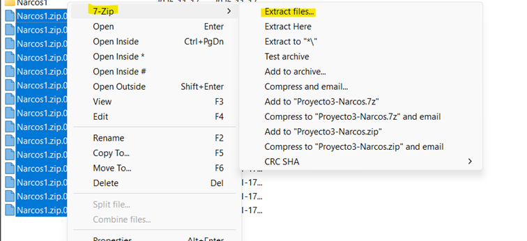
Narcos-1 mediante 7-Zip.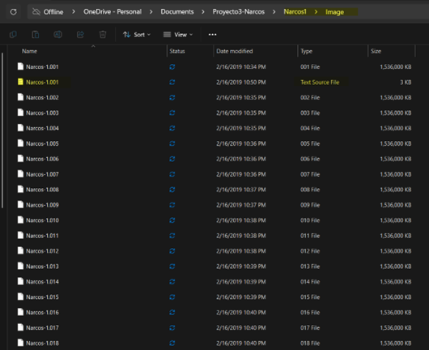
Narcos1\Image mostrando el archivo de auditoría Narcos-1.001.txt y los 21 segmentos RAW.
La inspección del registro original Narcos-1.001.txt acredita que la imagen física de disco (VMware Virtual Disk, interfaz Isilogic, 30,720 MB / 62,914,560 sectores) fue adquirida originalmente el domingo 17 de febrero de 2019 entre las 17:34:16 y las 17:41:53 mediante AccessData FTK Imager 4.2.0.13, generando y verificando los resúmenes criptográficos MD5 y SHA-1.
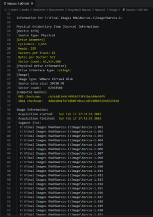
Narcos-1.001.txt (geometría de disco, tamaño 30,720 MB y hashes calculados en 2019).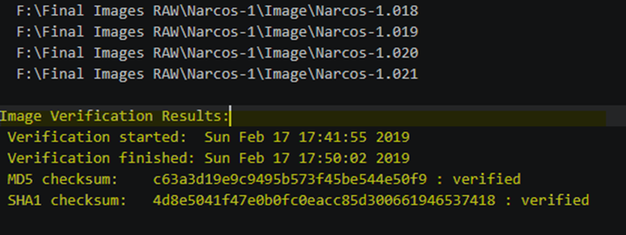
Narcos-1.001.txt confirmando la verificación original de MD5 y SHA-1.
Para garantizar que la evidencia no sufrió alteración ni corrupción durante su descarga y descompresión, se cargó el segmento inicial Narcos-1.001 en AccessData FTK Imager 4.3.1.1 (que concatena automáticamente los 21 segmentos) y se ejecutó la función Verify Drive/Image. Los valores calculados coincidieron al 100% con los del reporte original (Match: MD5 c63a3d19e9c9495b573f45be544e50f9 y SHA-1 4d8e5041f47e0b0fc0eacc85d300661946537418), sin detectarse bloques defectuosos.
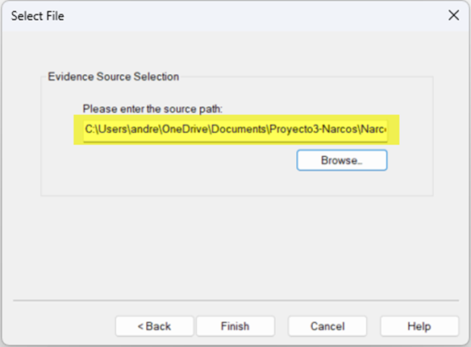
Narcos-1.001 en AccessData FTK Imager 4.3.1.1.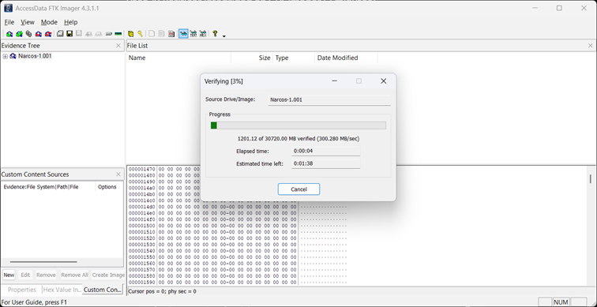
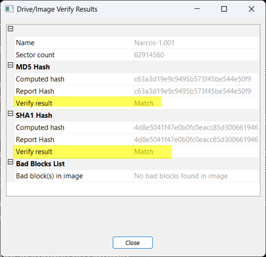
Match) en MD5 y SHA-1 para Narcos-1.
De manera complementaria, se verificó la integridad del volcado de memoria RAM alojado en Narcos1\Memory Dump (Narcos-Mem-1.001 a .003, 4,096 MB / 8,388,608 sectores), confirmando igualmente coincidencia exacta con los hashes registrados en Narcos-Mem-1.001.txt (MD5: 9ca08c17b4a359d61f6f8f7bb6328c1c; SHA-1: 191a10f54e04ad05d9d6a430e01ef6203406accb). Aunque el análisis volátil con Volatility queda fuera del alcance específico de la guía PRO3 (centrada en el disco Narcos-1), su verificación deja documentada esta evidencia para futuras diligencias.
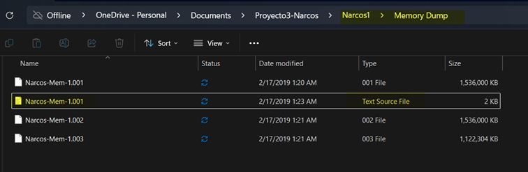
Narcos1\Memory Dump con los tres segmentos del volcado RAM y su archivo .txt.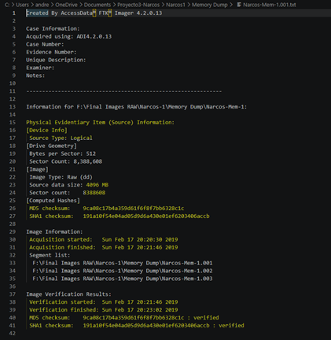
Narcos-Mem-1.001.txt con los hashes originales del volcado de memoria de 4,096 MB.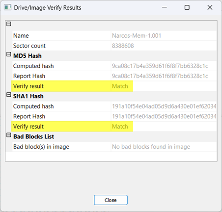
Match para Narcos-Mem-1.Configuración en Autopsy
Una vez validada la integridad de la imagen, se creó el caso PRO3_Narcos (Número de caso 02) en Autopsy 4.23.1 bajo la organización Universidad Politécnica de San Luis Potosí, registrando como examinadora a Andrea Morúa Bravo (185548@upslp.edu.mx). Se añadió Narcos-1.001 mediante la opción Disk Image or VM File seleccionando la zona horaria (GMT+12:00) Pacific/Auckland y ejecutando los módulos de ingesta completos (Recent Activity, Hash Lookup, File Type Identification, Extension Mismatch Detector, Embedded File Extractor, EXIF Parser, Keyword Search, Email Parser, Encryption Detection, PhotoRec Carver, Data Source Integrity, Plaso, entre otros), omitiendo únicamente Cyber Triage Malware Scanner por requerir licencia comercial.
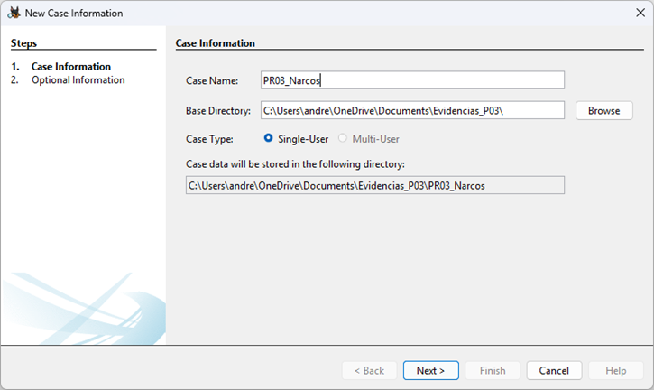
PRO3_Narcos en modo Single-User dentro de Autopsy 4.23.1.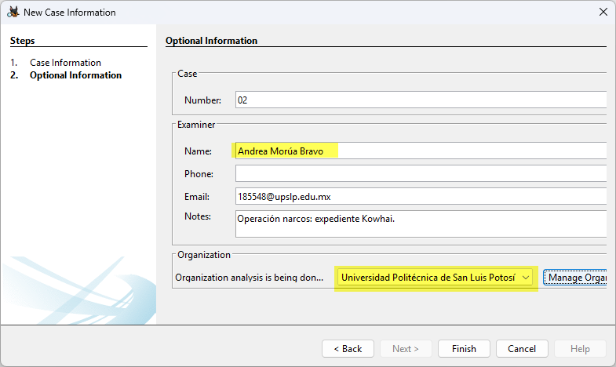
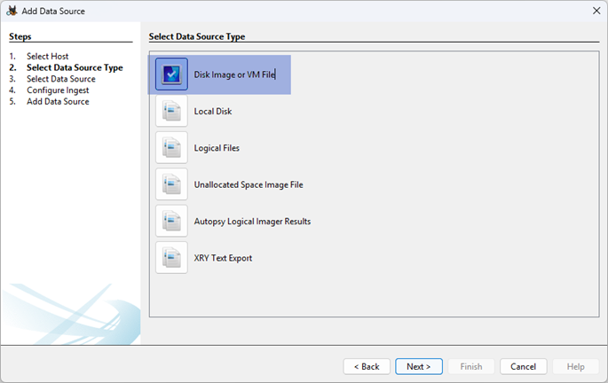
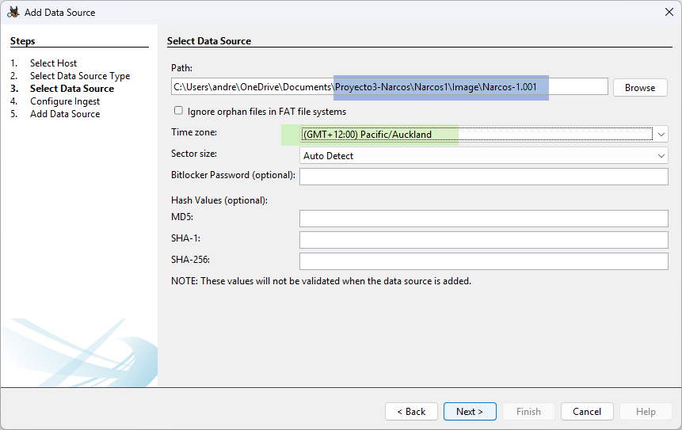
Narcos-1.001 con configuración de zona horaria (GMT+12:00) Pacific/Auckland.Tabla consolidada de resultados de extracción (Parte I: P1–P15)
Cada una de las 15 preguntas de extracción de la Parte I fue resuelta registrando su valor exacto, la ruta lógica y de sistema de archivos dentro de la imagen, la herramienta utilizada y su evidencia comprobable:
| # | Indicador / Pregunta | Resultado exacto y artefacto de respaldo |
|---|---|---|
| P1 | Edición y versión de Windows | Windows 10 Pro (EditionID: Professional), versión 1809, compilación 17763.107 (AMD64 / 64 bits). Artefacto: Operating System Information / SOFTWARE\...\CurrentVersion. |
| P2 | Perfil principal y ruta | Carpeta: Steve | Ruta absoluta: C:\Users\Steve. |
| P3 | Clave UserAssist | NTUSER.DAT\Software\Microsoft\Windows\CurrentVersion\Explorer\UserAssist\{GUID}\Count (GUIDs activos: {CEBFF5CD-...} y {F4E57C4B-...}). |
| P4 | Navegadores y bases de historial | Google Chrome (C:\Users\Steve\AppData\Local\Google\Chrome\User Data\Default\History) y Microsoft Edge EdgeHTML (C:\Users\Steve\AppData\Local\Microsoft\Windows\WebCache\WebCacheV01.dat). |
| P5 | MD5 de History (Chrome) | f3f979c6dee9fbb7cbdf5818aaa4b723 |
| P6 | Ruta de airport crystals.jpg |
C:\Users\Steve\Documents\Misc\airport crystals.jpg |
| P7 | Creación de airport crystals.jpg |
31/01/2019 10:25:18 NZDT (30/01/2019 21:25:18 UTC). |
| P8 | MD5 de dropoff.jpg |
7feb763bebe42c3a3464c9ee3bb1d3e8 (C:\Users\Steve\Documents\Misc\dropoff.jpg). |
| P9 | Última modificación de dropoff.jpg |
02/02/2019 14:06:06 NZDT (02/02/2019 01:06:06 UTC). |
| P10 | Imagen de vuelos en Documents\Misc |
flightbookings.PNG | Ruta: C:\Users\Steve\Documents\Misc\flightbookings.PNG (MD5: d1b21a1cddcb3494d637f2424cc5f0f1). |
| P11 | MD5 de Method run.jpg |
69b225bc0ef5a0c003f1e2a6646aaf92 (C:\Users\Steve\Documents\Misc\Method run.jpg). |
| P12 | MD5 de BNE.png |
dffa98bdd7371d1806adb09db27ba283 (C:\Users\Steve\Downloads\Misc\BNE.png). |
| P13 | Instalador de esteganografía | Image Steganography 1.5.2 Setup.exe | C:\Users\Steve\Downloads\Image Steganography 1.5.2 Setup.exe | MD5: c9b7c382dea6d7f45ae1bf437860cb69. |
| P14 | Instalador de cifrado | TrueCrypt Setup 7.1a.exe | C:\Users\Steve\Downloads\TrueCrypt Setup 7.1a.exe | MD5: 7a23ac83a0856c352025a6f7c9cc1526. |
| P15 | Caché de Discord y Windows Timeline | C:\Users\Steve\AppData\Roaming\Discord\Cache (data_0 MD5: b5e08ee0e4de86d0015fdbd753d55ecb) y C:\Users\Steve\AppData\Local\ConnectedDevicesPlatform\2418c0082017486a\ActivitiesCache.db (MD5: 6640280b620017520d521597d1d49688). |
Parte I. Extracción e identificación de evidencia digital
I. Sistema operativo y navegación
Pregunta 1. ¿Qué edición y versión de Windows se encuentran instaladas en el equipo? Indica el artefacto donde se obtiene la información.
- Edición: Windows 10 Pro (
EditionID: Professional) - Versión: 1809 (
ReleaseId: 1809) - Compilación: 17763.107 (
CurrentBuild: 17763,UBR: 107) - Arquitectura: 64 bits (
AMD64) - Nombre del equipo:
SK-DESKTOP| Propietario registrado:Steve| Product ID:00330-80000-00000-AA502 - Artefacto de Autopsy: Data Artifacts > Operating System Information
- Registro de Windows:
C:\Windows\System32\config\SOFTWARE(/img_Narcos-1.001/vol_vol7/Windows/System32/config/SOFTWARE)
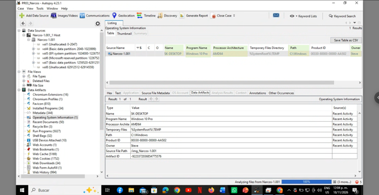
SK-DESKTOP, Windows 10 Pro, arquitectura AMD64 y propietario Steve.Pregunta 2. ¿Cuál es el nombre de la carpeta del perfil principal y cuál es su ruta absoluta?
- Nombre de la carpeta del perfil principal:
Steve - Ruta absoluta en Windows:
C:\Users\Steve - Ruta en donde se encontró:
/img_Narcos-1.001/vol_vol7/Users/Steve(en FTK Imager:Narcos-1.001/Basic data partition (4)/NONAME [NTFS]/[root]/Users/Steve). - Procedimiento: Se inspeccionó la jerarquía de las carpetas bajo
C:\Users(dondeStevees el único perfil activo de usuario final junto a las carpetas predeterminadasDefaultyPublic) y su corroboración enProfileList.
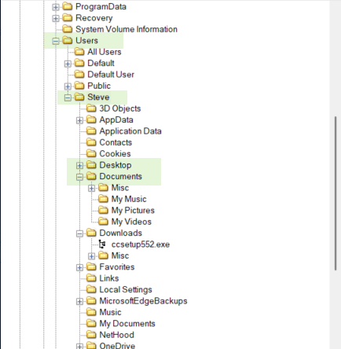
C:\Users\Steve y sus subdirectorios Desktop, Documents y Downloads.Pregunta 3. ¿Cuál es la ruta de la clave UserAssist que registra actividad de programas en el perfil principal?
- Ruta de la clave en la colmena del usuario:
NTUSER.DAT\Software\Microsoft\Windows\CurrentVersion\Explorer\UserAssist\{GUID}\Count - Subclaves activas con registros de ejecución (codificados en ROT13): Ejecutables directos:
...\UserAssist\{CEBFF5CD-ACE2-4F4F-9178-9926F41749EA}\Count; Accesos directos (.lnk):...\UserAssist\{F4E57C4B-2036-45F0-A9AB-443BCFE33D9F}\Count. - Ruta en donde se encontró:
C:\Users\Steve\NTUSER.DAT(/img_Narcos-1.001/vol_vol7/Users/Steve/NTUSER.DAT). - Procedimiento: Autopsy 4.23.1: navegación hacia
/Users/Steve/NTUSER.DATy despliegue de la estructura jerárquica en la pestaña Application (visor de registro), identificando los contenedores GUID activos y sus subclavesCount.
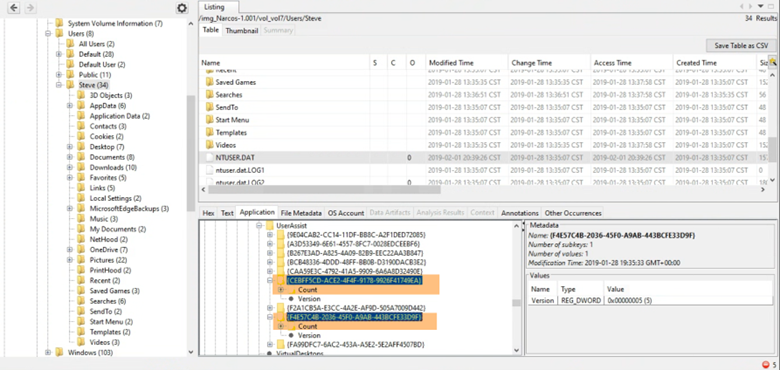
Users\Steve\NTUSER.DAT): ruta completa de UserAssist y sus subclaves {CEBFF5CD-...}\Count y {F4E57C4B-...}\Count.Pregunta 4. ¿Qué dos navegadores presentan artefactos de actividad? Identifica el archivo o base de datos del historial de cada uno.
- 1) Google Chrome: Base de datos SQLite
History(565 visitas y 8 descargas registradas entre el 30/01/2019 y el 02/02/2019 NZDT). Ruta:C:\Users\Steve\AppData\Local\Google\Chrome\User Data\Default\History(/img_Narcos-1.001/vol_vol7/Users/Steve/AppData/Local/Google/Chrome/User Data/Default/History). - 2) Microsoft Edge (EdgeHTML): Base de datos Extensible Storage Engine (ESE)
WebCacheV01.dat(432 entradas de navegación y 3 descargas entre el 29/01/2019 y el 02/02/2019 NZDT). Ruta:C:\Users\Steve\AppData\Local\Microsoft\Windows\WebCache\WebCacheV01.dat(/img_Narcos-1.001/vol_vol7/Users/Steve/AppData/Local/Microsoft/Windows/WebCache/WebCacheV01.dat). - Herramienta y procedimiento: Autopsy 4.23.1: revisión de Data Artifacts > Web History (994 resultados totales), verificando la columna Program Name (
Google ChromeyMicrosoft Edge Analyzer) y la ruta física en Source File Metadata. Se confirmó asimismo la ausencia de perfil de Mozilla Firefox.
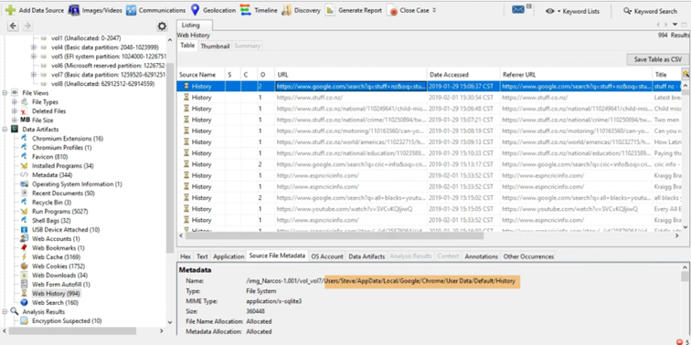
History en Source File Metadata.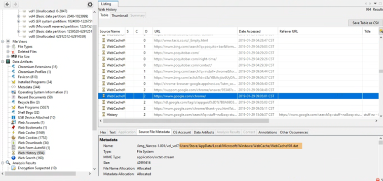
WebCacheV01.dat.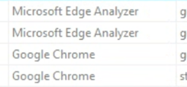
Microsoft Edge Analyzer y Google Chrome.Pregunta 5. ¿Cuál es el hash MD5 del archivo History del perfil predeterminado de Chrome?
- Hash MD5:
f3f979c6dee9fbb7cbdf5818aaa4b723(SHA-1:178c6170cf55e649c7cedd201b4a9ea51a976b0f· SHA-256:cf4d621f935bd2322bfc1adfc2810f3e7cb77584c7a45619b46f063f9abde02b· Tamaño: 360,448 bytes). - Artefacto y ruta:
C:\Users\Steve\AppData\Local\Google\Chrome\User Data\Default\History(/img_Narcos-1.001/vol_vol7/Users/Steve/AppData/Local/Google/Chrome/User Data/Default/History). - Herramienta y procedimiento: Doble verificación independiente: 1) Exportación de listado de hashes CSV en AccessData FTK Imager 4.3.1.1 (MD5 y SHA-1), y 2) Consulta directa de la pestaña File Metadata en Autopsy 4.23.1 (MD5 y SHA-256). Ambos métodos arrojan exactamente
f3f979c6dee9fbb7cbdf5818aaa4b723.
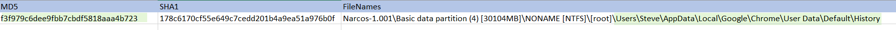
f3f979c6dee9fbb7cbdf5818aaa4b723 del archivo History.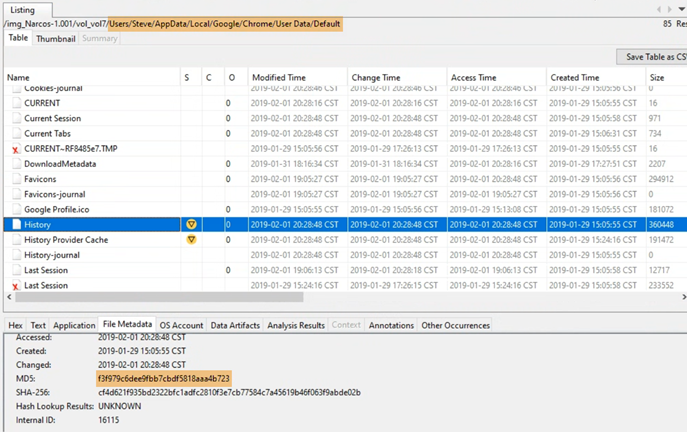
History): confirmación del tamaño de 360,448 bytes, MD5 f3f979c6dee9fbb7cbdf5818aaa4b723 y SHA-256.II. Documentos, imágenes y metadatos
Pregunta 6. ¿Cuál es la ruta absoluta del archivo airport crystals.jpg?
- Ruta absoluta en Windows:
C:\Users\Steve\Documents\Misc\airport crystals.jpg - Artefacto y ruta:
/img_Narcos-1.001/vol_vol7/Users/Steve/Documents/Misc/airport crystals.jpg(Tamaño: 77,643 bytes · MD5:f938f92d9dbaeda2e92246deeebe830a· Registro MFT:90885). - Herramienta y procedimiento: AccessData FTK Imager 4.3.1.1 y Autopsy 4.23.1: exploración directa de la carpeta
Documents\Miscdel perfilSteve, verificando tanto la ruta lógica en la barra inferior de FTK Imager como la vista previa del mapa contenido en el archivo.
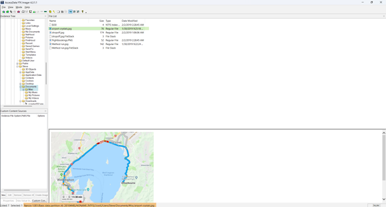
C:\Users\Steve\Documents\Misc\airport crystals.jpg y su vista previa.Pregunta 7. ¿Cuál es la fecha y hora de creación de airport crystals.jpg (NZDT)?
- Fecha y hora de creación:
31/01/2019 10:25:18 NZDT(30/01/2019 21:25:18 UTC). - Nota de visualización: En la captura de FTK Imager sin ajuste de zona horaria se muestra en UTC como
1/30/2019 9:25:18 PM; en Autopsy con zonaPacific/Aucklandaparece como2019-01-31 09:25:18.258431100 (NZD), correspondiente al desplazamiento estándar +12 antes del ajuste +13 de horario de verano NZDT. - Artefacto y ruta: Atributo NTFS
$STANDARD_INFORMATION(Creation Time) enC:\Users\Steve\Documents\Misc\airport crystals.jpg. - Herramienta y procedimiento: Inspección de propiedades del archivo en AccessData FTK Imager 4.3.1.1 (panel Properties > Date Created) y contraste en la pestaña File Metadata de Autopsy 4.23.1.
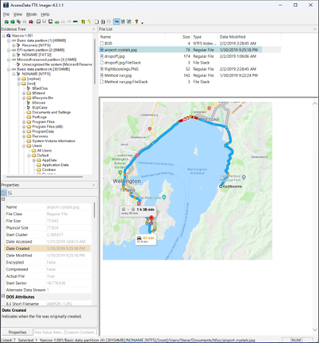
1/30/2019 9:25:18 PM = 31/01/2019 10:25:18 NZDT).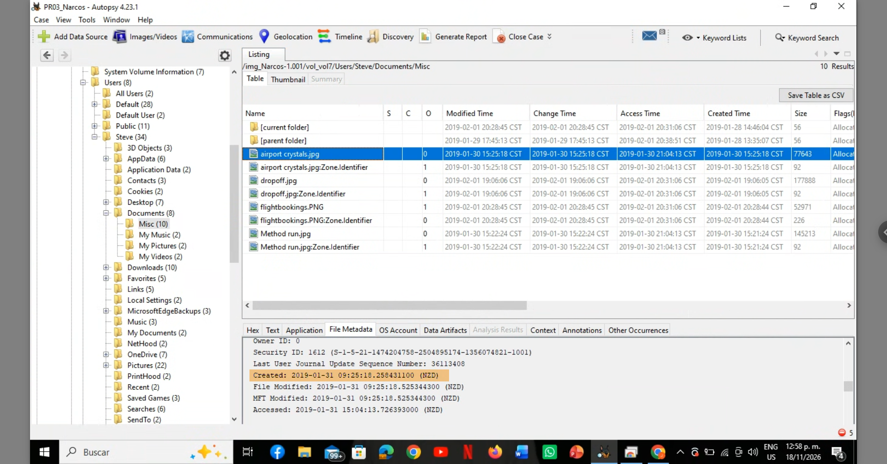
airport crystals.jpg): marca de creación con zona horaria de Nueva Zelanda (2019-01-31 09:25:18.258431100 NZD / 10:25:18 NZDT).Pregunta 8. ¿Cuál es el hash MD5 completo de dropoff.jpg?
- Hash MD5:
7feb763bebe42c3a3464c9ee3bb1d3e8(SHA-1:47ea895261f5b0f6775b0e2c66891067bc816f92· SHA-256:433d3a0508d87ec82f69f573d8d12269ef770d8a66e999d2ee551c87e5ad23f9· Tamaño: 177,888 bytes). - Artefacto y ruta:
C:\Users\Steve\Documents\Misc\dropoff.jpg(/img_Narcos-1.001/vol_vol7/Users/Steve/Documents/Misc/dropoff.jpg· Registro MFT:99430). Incluye el flujo alterno de datos NTFSdropoff.jpg:Zone.Identifier(MD5:0a1a195222044f4cd9aba9eac9d2f969), generado por la aplicación nativa Recorte y anotación de Windows 10 (Microsoft.ScreenSketch). - Herramienta y procedimiento: AccessData FTK Imager 4.3.1.1 (exportación de hashes CSV sobre
dropoff.jpgy su flujo alterno:Zone.Identifier) y verificación en Autopsy 4.23.1.
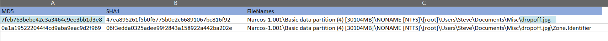
7feb763bebe42c3a3464c9ee3bb1d3e8 de dropoff.jpg y de su flujo :Zone.Identifier.Pregunta 9. ¿Cuál es la fecha y hora de última modificación de dropoff.jpg (NZDT)?
- Fecha y hora de última modificación:
02/02/2019 14:06:06 NZDT(02/02/2019 01:06:06 UTC). - Nota de visualización: FTK Imager en UTC muestra
2/2/2019 1:06:06 AM; Autopsy en zonaPacific/Aucklandmuestra2019-02-02 13:06:06.044310700 (NZD), equivalente a14:06:06 NZDTcon UTC+13. - Artefacto y ruta: Atributo NTFS
$STANDARD_INFORMATION(File Modified / MFT Modified) enC:\Users\Steve\Documents\Misc\dropoff.jpg. - Herramienta y procedimiento: AccessData FTK Imager 4.3.1.1 (panel Properties > Date Modified) y Autopsy 4.23.1 (pestaña File Metadata > File Modified / MFT Modified).
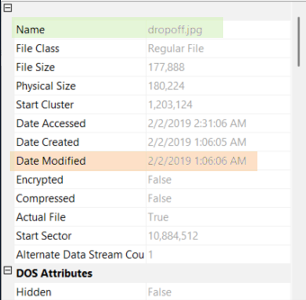
dropoff.jpg en UTC (2/2/2019 1:06:06 AM = 02/02/2019 14:06:06 NZDT).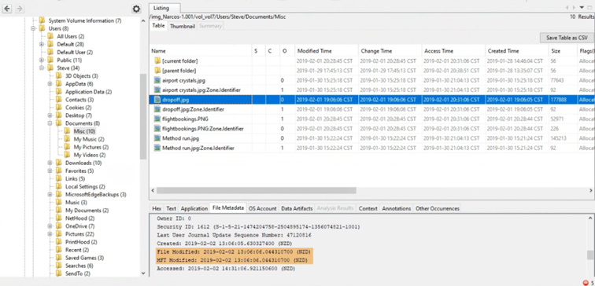
dropoff.jpg): confirmación de File Modified y MFT Modified (2019-02-02 13:06:06.044310700 NZD / 14:06:06 NZDT).Pregunta 10. ¿Cuál es el nombre exacto y la ruta del archivo de imagen relacionado con reservaciones de vuelo en Documents\Misc?
- Nombre exacto del archivo:
flightbookings.PNG - Ruta absoluta en Windows:
C:\Users\Steve\Documents\Misc\flightbookings.PNG(Tamaño: 52,971 bytes · MD5:d1b21a1cddcb3494d637f2424cc5f0f1· Registro MFT:21765). - Artefacto y ruta:
/img_Narcos-1.001/vol_vol7/Users/Steve/Documents/Misc/flightbookings.PNG - Herramienta y procedimiento: AccessData FTK Imager 4.3.1.1: inspección del directorio
Documents\Miscy visualización directa del contenido gráfico, confirmando que se trata de una cotización de vuelos entre Brisbane (BNE) y Wellington (WLG) para dos adultos.
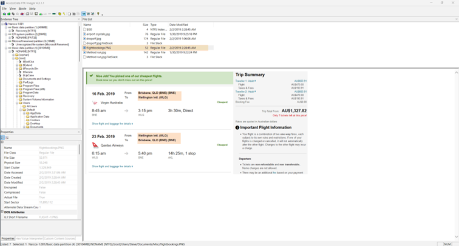
flightbookings.PNG en Documents\Misc y previsualización de la cotización de vuelos.Pregunta 11. ¿Cuál es el hash MD5 del archivo Method run.jpg?
- Hash MD5:
69b225bc0ef5a0c003f1e2a6646aaf92(SHA-1:2f9cefcba4f8735bdc852baf572266b32f05ef93· SHA-256:f5404c87cb8a7cc7744f9d81526501581e1a591fb0ba886f88a4591a4168bdfe· Tamaño: 145,213 bytes). - Artefacto y ruta:
C:\Users\Steve\Documents\Misc\Method run.jpg(/img_Narcos-1.001/vol_vol7/Users/Steve/Documents/Misc/Method run.jpg· Registro MFT:90807). - Herramienta y procedimiento: AccessData FTK Imager 4.3.1.1: cálculo y exportación de sumas criptográficas CSV sobre el archivo
Method run.jpgy su flujo alterno:Zone.Identifier.
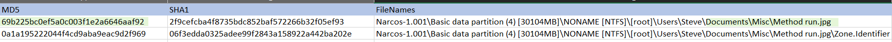
69b225bc0ef5a0c003f1e2a6646aaf92 de Method run.jpg.III. Programas y otros artefactos
Pregunta 12. ¿Cuál es el hash MD5 completo de BNE.png?
- Hash MD5:
dffa98bdd7371d1806adb09db27ba283(SHA-256:89fba83372edd2d55e12735db1e455daa5909bdab1ee79e4d38a66bc9f566f60· Tamaño: 4,376,793 bytes). - Artefacto y ruta:
C:\Users\Steve\Downloads\Misc\BNE.png(/img_Narcos-1.001/vol_vol7/Users/Steve/Downloads/Misc/BNE.png· Registro MFT:21202). - Herramienta y procedimiento: Autopsy 4.23.1: navegación hacia
Users\Steve\Downloads\Misc, selección deBNE.pngy lectura directa de su huella criptográfica en la pestaña File Metadata.
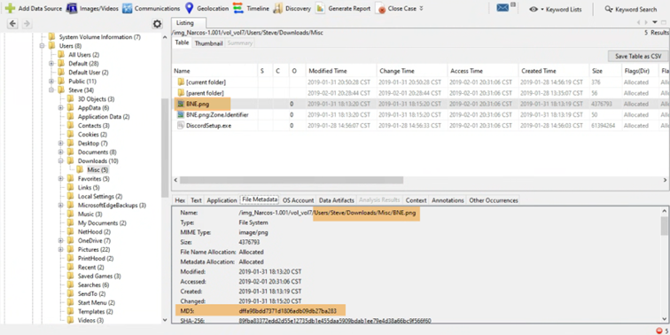
BNE.png): ruta en Downloads\Misc y hash MD5 dffa98bdd7371d1806adb09db27ba283.Pregunta 13. ¿Cuál es el nombre, ruta y MD5 del instalador de una herramienta de esteganografía en Downloads?
- Nombre del instalador:
Image Steganography 1.5.2 Setup.exe - Ruta absoluta:
C:\Users\Steve\Downloads\Image Steganography 1.5.2 Setup.exe - Hash MD5:
c9b7c382dea6d7f45ae1bf437860cb69 - Artefacto y ruta:
/img_Narcos-1.001/vol_vol7/Users/Steve/Downloads/Image Steganography 1.5.2 Setup.exe(Registro MFT:96893). - Herramienta y procedimiento: Autopsy 4.23.1: inspección del directorio
Users\Steve\Downloadsy extracción de metadatos criptográficos desde la pestaña File Metadata.
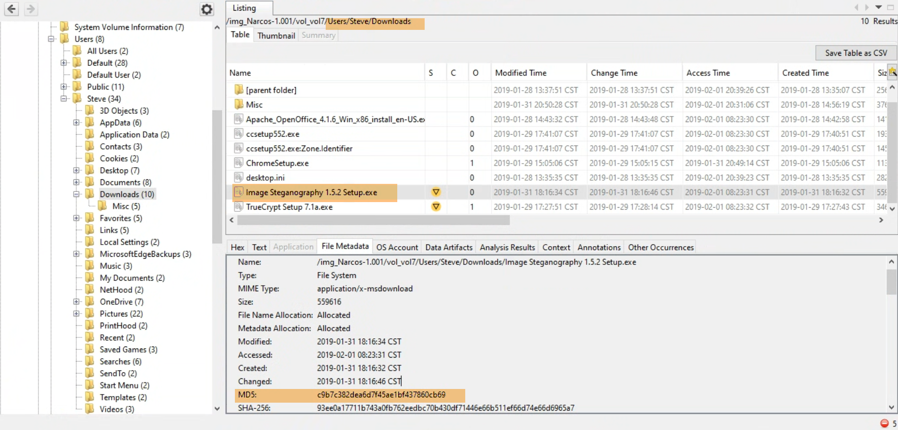
Image Steganography 1.5.2 Setup.exe en Downloads y su hash MD5 c9b7c382dea6d7f45ae1bf437860cb69.Pregunta 14. ¿Cuál es el nombre y la ruta del instalador de una herramienta de cifrado encontrado en Downloads?
- Nombre del instalador:
TrueCrypt Setup 7.1a.exe - Ruta absoluta:
C:\Users\Steve\Downloads\TrueCrypt Setup 7.1a.exe - Hash MD5 complementario:
7a23ac83a0856c352025a6f7c9cc1526 - Artefacto y ruta:
/img_Narcos-1.001/vol_vol7/Users/Steve/Downloads/TrueCrypt Setup 7.1a.exe(Registro MFT:86637). - Herramienta y procedimiento: Autopsy 4.23.1: revisión de los ejecutables alojados en
Users\Steve\Downloadsy verificación de metadatos en File Metadata.
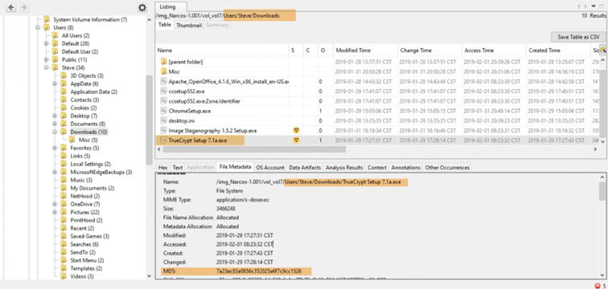
TrueCrypt Setup 7.1a.exe en Downloads y su huella MD5 7a23ac83a0856c352025a6f7c9cc1526.Pregunta 15. ¿Cuáles son las rutas de la caché de Discord y de ActivitiesCache.db utilizada por Windows Timeline?
- 1) Caché de Discord: Ruta de carpeta:
C:\Users\Steve\AppData\Roaming\Discord\Cache. Archivos internos verificados: índicesdata_0(45,056 bytes, MD5:b5e08ee0e4de86d0015fdbd753d55ecb),data_1,data_2,data_3y contenedoresf_000001en adelante. - 2) Base de datos de Windows Timeline (
ActivitiesCache.db): Ruta absoluta:C:\Users\Steve\AppData\Local\ConnectedDevicesPlatform\2418c0082017486a\ActivitiesCache.db. Tamaño: 2,097,152 bytes · MD5:6640280b620017520d521597d1d49688(acompañada de sus archivos auxiliares-shmy-wal). - Artefacto y ruta:
/img_Narcos-1.001/vol_vol7/Users/Steve/AppData/Roaming/Discord/Cachey/img_Narcos-1.001/vol_vol7/Users/Steve/AppData/Local/ConnectedDevicesPlatform/2418c0082017486a/ActivitiesCache.db. - Herramienta y procedimiento: Autopsy 4.23.1: navegación por
AppData\Roaming\Discord\CacheyAppData\Local\ConnectedDevicesPlatform\2418c0082017486a, documentando rutas exactas y hashes MD5 en File Metadata.
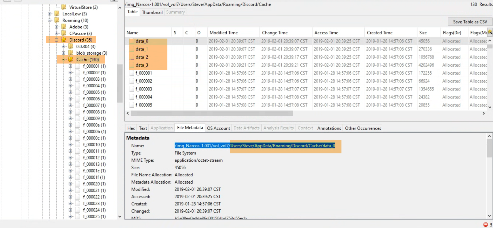
Users\Steve\AppData\Roaming\Discord\Cache mostrando los índices data_0–data_3 y el hash MD5 de data_0.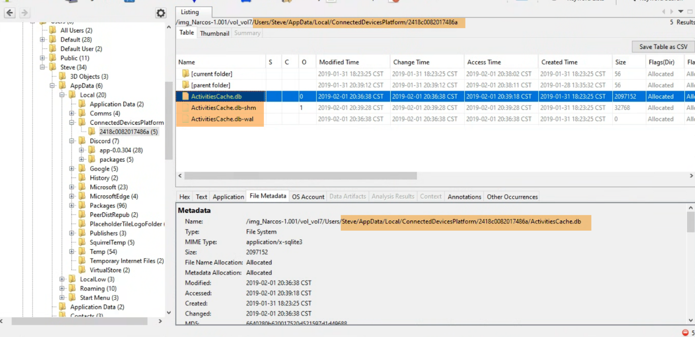
ActivitiesCache.db en ConnectedDevicesPlatform\2418c0082017486a y su hash MD5 6640280b620017520d521597d1d49688.Parte II. Investigación, interpretación y análisis del caso
En cumplimiento de las directrices metodológicas de la Parte II, cada respuesta separa de forma explícita: (1) lo observado empíricamente en los artefactos del disco con sus marcas temporales en NZDT y UTC, (2) la interpretación forense propuesta a partir de la correlación de evidencias, y (3) aquello que no puede confirmarse con los datos disponibles en Narcos-1, evitando equiparar la descarga o presencia de un archivo con su ejecución o uso material.
Pregunta 16. Examina flightbookings, BNE.png y dropoff.jpg. ¿Qué coincidencias sobre lugares, desplazamientos o logística identificas?
| Archivo y ruta | Metadatos NTFS (UTC / NZDT) | Contenido visual y origen forense |
|---|---|---|
BNE.pngC:\Users\Steve\Downloads\Misc\BNE.png |
Creación: 01/02/2019 00:13:19 UTC (13:13:19 NZDT) Modificación: 01/02/2019 00:13:20 UTC (13:13:20 NZDT) Traslado a Misc: 13:15:20 NZDT |
Fotografía panorámica al anochecer del puente Story Bridge y el perfil urbano de Brisbane, Queensland, Australia (código IATA: BNE). Descargada en Chrome desde un objeto blob: de mail.protonmail.com. |
dropoff.jpgC:\Users\Steve\Documents\Misc\dropoff.jpg |
Creación: 02/02/2019 01:06:05 UTC (14:06:05 NZDT) Modificación: 02/02/2019 01:06:06 UTC (14:06:06 NZDT) Último acceso: 02/02/2019 15:31:06 NZDT |
Captura de pantalla de Google Maps centrada en Eastbourne Library (38 Rimu St, Eastbourne, Lower Hutt 5013, Wellington, NZ). Creada 41 s después de consultar dicha ubicación en Google Chrome. |
flightbookings.PNGC:\Users\Steve\Documents\Misc\flightbookings.PNG |
Creación: 02/02/2019 02:28:44 UTC (15:28:44 NZDT) Modificación: 02/02/2019 02:28:45 UTC (15:28:45 NZDT) Descarga original: 15:28:26 NZDT |
Cotización de vuelos en dólares australianos (AU$1,327.82 total) para 2 pasajeros adultos: ida Brisbane (BNE) → Wellington (WLG) el 16/02/2019 (Virgin Australia, vuelo directo 08:45–15:15) y regreso WLG → BNE el 23/02/2019 (Qantas, escala en AKL). Descargada desde Discord (adjunto Steve_K.PNG). |
BNE.png: vista panorámica del Story Bridge en Brisbane, Australia (código aeroportuario BNE).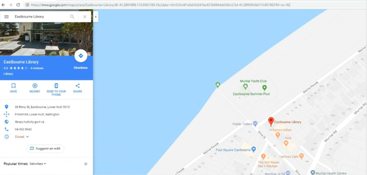
dropoff.jpg: ficha de Google Maps de Eastbourne Library (38 Rimu St, Eastbourne, Lower Hutt 5013).flightbookings.PNG: itinerario Brisbane (BNE) → Wellington (WLG) para el 16/02/2019 cotizado para dos adultos.- 1. Lo observado y coincidencias identificadas: Los tres archivos gráficos convergen en tres ejes logísticos precisos: (a) Coincidencia geográfica origen-destino, ya que
BNE.pngalude a Brisbane (Australia),flightbookings.PNGmodela el trayecto aéreo desde Brisbane (BNE) hasta Wellington (WLG) ydropoff.jpgubica exactamente la biblioteca de Eastbourne (38 Rimu St), señalada en el expediente como uno de los dos puntos de entrega de la mercancía; (b) Coincidencia en el número de viajeros, puesflightbookings.PNGcotiza pasajes específicamente para dos pasajeros adultos (Traveller 1: AdultyTraveller 2: Adult), concordante con los dos viajeros procedentes de Australia interceptados en Wellington (John Fredricksen y Jane Esteban); y (c) Secuencia temporal y nomenclatura intencional, dado que el 02/02/2019, con apenas 1 hora y 22 minutos de diferencia entre las 14:06 NZDT y las 15:28 NZDT, se guardó el mapa de la biblioteca bajo el nombre explícitodropoff.jpg("punto de entrega") seguido deflightbookings.PNG, volviendo a accederse adropoff.jpgtres minutos después (15:31:06 NZDT). Además, la fecha del vuelo de ida (16/02/2019) antecede en un día a la adquisición forense de la imagen (17/02/2019). - 2. Interpretación forense propuesta: En conjunto, los tres artefactos conforman un paquete coherente de planeación logística internacional que vincula el punto de partida en Australia (Brisbane), el medio y fecha de arribo a Nueva Zelanda (vuelo directo a Wellington el 16 de febrero de 2019 para dos personas) y el punto geográfico acordado para la recepción o entrega en tierra (Eastbourne Library).
- 3. Lo que NO puede confirmarse con la evidencia disponible:
flightbookings.PNGmuestra una pantalla de cotización previa al pago ("Book now so you don't miss out on this price!"), sin código de reserva (PNR), boletos electrónicos emitidos ni los nombres de John Fredricksen o Jane Esteban; por tanto, no prueba por sí sola que los boletos se compraran ni que los interceptados viajaran en ese vuelo específico. Tampoco se conoce quién creó originalmente la imagenSteve_K.PNGpublicada en Discord, ni el almacenamiento dedropoff.jpgacredita que el usuario se desplazara físicamente a la biblioteca de Eastbourne.
Pregunta 17. Contrasta airport crystals.jpg y Method run.jpg con un registro de actividad del equipo. ¿Qué interpretación sobre su finalidad puede sostenerse?
| Archivo y ruta | Metadatos NTFS (UTC / NZDT) | Contenido gráfico y traza de actividad |
|---|---|---|
Method run.jpgC:\Users\Steve\Documents\Misc\Method run.jpg |
Creación: 30/01/2019 21:21:24 UTC (31/01/2019 10:21:24 NZDT) Modificación: 30/01/2019 21:22:24 UTC (31/01/2019 10:22:24 NZDT) |
Captura de Google Maps mostrando una ruta terrestre de 54 min (42.5 km) desde Eastbourne —con una anotación manuscrita en color rojo que dice Home— hacia Wainuiomata, Lower Hutt / Naenae y Stokes Valley. |
airport crystals.jpgC:\Users\Steve\Documents\Misc\airport crystals.jpg |
Creación: 30/01/2019 21:25:18 UTC (31/01/2019 10:25:18 NZDT) Modificación: 30/01/2019 21:25:18 UTC (31/01/2019 10:25:18 NZDT) |
Captura de Google Maps con el trayecto de 47 min en automóvil (31.6 km; 1 h 38 min en transporte público) desde Eastbourne hasta el Aeropuerto Internacional de Wellington rodeando la bahía y pasando frente a Petone. |

airport crystals.jpg: ruta en Google Maps entre Eastbourne y el Aeropuerto de Wellington pasando frente a Petone (47 min, 31.6 km).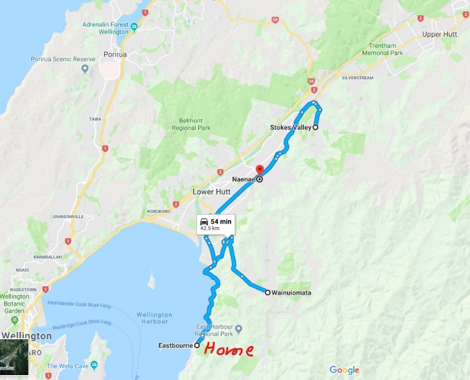
Method run.jpg: recorrido terrestre en el Valle de Hutt (Stokes Valley – Naenae – Wainuiomata – Eastbourne) con la anotación manuscrita Home en rojo.- 1. Lo observado (correlación temporal y artefactos de actividad): Al contrastar ambas imágenes con los registros de actividad del perfil
Steve(historial de navegación de Google Chrome, Windows Timeline enActivitiesCache.dby documentos recientes / accesos directos.lnkenAppData\Roaming\Microsoft\Windows\Recent), se observa una secuencia sincronizada al segundo durante la mañana del 31/01/2019 (NZDT): entre las 10:17 y las 10:19 NZDT Chrome consultó en Google Maps las rutas de Stokes Valley y Wainuiomata hacia Eastbourne; inmediatamente después se activó la herramienta nativa Recorte y anotación (Microsoft.ScreenSketch) y a las 10:21:24 NZDT se creóMethod run.jpg(modificado un minuto después tras añadir la anotación manuscritaHomeen rojo), generándose su acceso directoMethod run.lnk. Tres minutos después, a las 10:24 NZDT, Chrome consultó la ruta "Eastbourne, Lower Hutt to Wellington International Airport", activándose nuevamente Screen Sketch y guardándoseairport crystals.jpga las 10:25:18 NZDT junto conairport crystals.lnk. - 2. Interpretación forense propuesta: La correlación exacta entre las consultas en Google Maps, la ejecución en primer plano de Screen Sketch y la creación de los archivos demuestra que ambos mapas fueron fabricados localmente por el usuario de la sesión
Steve, y no recibidos de terceros. Sus nombres (airport crystals, en clara alusión al traslado de metanfetamina cristalina desde/hacia el aeropuerto pasando por Petone, yMethod run, juego fonético con "meth" sobre un circuito de reparto terrestre entre Eastbourne y el Valle de Hutt), sumados a las búsquedas en el equipo sobrecrystal methydrug routes in wellington, sustentan que su finalidad era documentar y planificar rutas operativas de traslado y distribución. - 3. Lo que NO puede confirmarse con la evidencia disponible: Los registros del sistema vinculan la creación y edición de los mapas con la sesión activa del perfil
Steve, pero no permiten identificar biométricamente quién estaba frente al teclado ni probar que los desplazamientos vehiculares marcados en Google Maps se hayan recorrido materialmente.
Pregunta 18. ¿Qué evidencia permite afirmar que Discord estuvo presente o fue utilizado en el equipo? ¿Qué no puede concluirse sobre conversaciones, interlocutores o autoría sin recuperar mensajes verificables?
- 1. Lo observado (artefactos de presencia, instalación y uso): Múltiples artefactos independientes confirman la descarga, instalación, ejecución reiterada y uso activo de la aplicación de escritorio Discord en
SK-DESKTOP: (a) en el historial y descargas de Microsoft Edge se registra la obtención deDiscordSetup.exedesdedl.discordapp.nety su ejecución el 29/01/2019 a las 09:56:33 NZDT (UserAssist); (b) el registro de instalaciónC:\Users\Steve\AppData\Local\Discord\SquirrelSetup.logdocumenta la instalación de Discord v0.0.304 el 29/01/2019 a las 09:56:46 NZDT, la creación de accesos directos y el lanzamiento deDiscord.exe; (c) los archivos Prefetch (DISCORD.EXEyUPDATE.EXE), BAM (Background Activity Moderator, última ejecución el 02/02/2019 15:39:25 NZDT) y Windows Timeline acreditan uso recurrente entre el 29 de enero y el 2 de febrero de 2019; y (d) en la caché local (C:\Users\Steve\AppData\Roaming\Discord\Cache\data_1) y en Web Cache se localizó la URL de previsualización del adjuntoSteve_K.PNG(52,971 bytes, canal539550615072800768), descargado a través de Chrome el 02/02/2019 a las 15:28:26 NZDT comoflightbookings.PNGmientras Discord permanecía activo en primer plano.
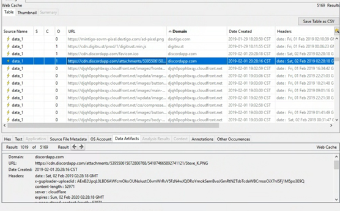
cdn.discordapp.com correspondiente al adjunto Steve_K.PNG (canal 539550615072800768).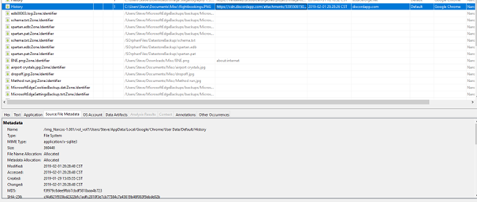
Steve_K.PNG hacia Documents\Misc\flightbookings.PNG.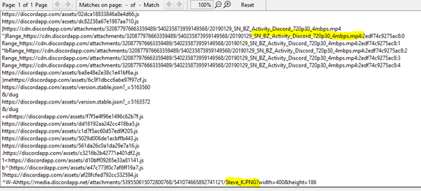
Users\Steve\AppData\Roaming\Discord\Cache\data_1 en Autopsy confirmando activos y miniaturas cacheadas de Discord.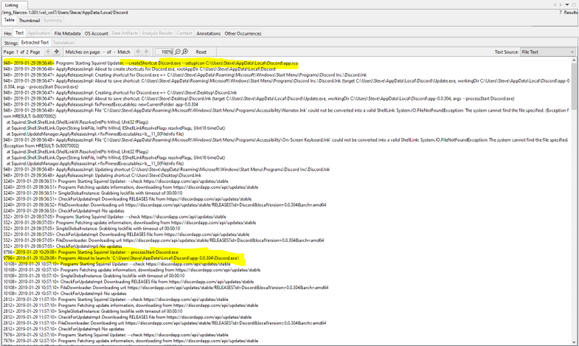
SquirrelSetup.log en Users\Steve\AppData\Local\Discord acreditando el despliegue de Discord 0.0.304.- 2. Interpretación forense propuesta: Se demuestra de forma concluyente que el cliente de escritorio Discord fue instalado y operado bajo el perfil
Steve, funcionando como el canal digital mediante el cual se visualizó y descargó la cotización aérea Brisbane–Wellington (Steve_K.PNG→flightbookings.PNG), cuyo nombre original contiene las iniciales del investigado (Steve_K). - 3. Lo que NO puede concluirse sin recuperar mensajes verificables: Dado que Discord almacena el historial de mensajes en servidores remotos y no conserva una base local de conversaciones en texto plano (sus archivos LevelDB en
Local Storagesolo guardan metadatos de sesión y estado de canal), con el examen del disco no puede reconstruirse el contenido textual de los chats, determinar la identidad física o legal de los demás integrantes del canal539550615072800768(ni atribuirlos a John Fredricksen o Jane Esteban sin orden judicial al proveedor), ni establecer quién creó o subió originalmente el archivoSteve_K.PNG.
Pregunta 19. Analiza los indicios de herramientas de esteganografía y cifrado. Diferencia descarga, instalación, ejecución y uso efectivo; explica qué artefactos respaldan cada nivel.
En la evidencia analizada se identificaron dos herramientas especializadas orientadas al ocultamiento y protección de información: TrueCrypt 7.1a (cifrado de volúmenes) e Image Steganography 1.5.2 (ocultamiento de datos en imágenes), acompañadas del limpiador antiforense CCleaner 5.52. A continuación se desglosa la trazabilidad forense de ambas herramientas diferenciando los cuatro niveles de actividad:
| Nivel de actividad | TrueCrypt 7.1a (Herramienta de cifrado) | Image Steganography 1.5.2 (Esteganografía) |
|---|---|---|
| 1. Descarga | Comprobado: Búsqueda truecrypt en Chrome el 30/01/2019 12:26:30 NZDT (29/01 23:26:30 UTC), acceso a Softpedia y descarga de C:\Users\Steve\Downloads\TrueCrypt Setup 7.1a.exe el 30/01/2019 12:27:43 NZDT (MD5: 7a23ac83a0856c352025a6f7c9cc1526). |
Comprobado: Búsqueda image steganography en Chrome el 01/02/2019 13:15:04 NZDT (00:15:04 UTC) y descarga desde SourceForge de C:\Users\Steve\Downloads\Image Steganography 1.5.2 Setup.exe el 01/02/2019 13:16:32 NZDT (MD5: c9b7c382dea6d7f45ae1bf437860cb69). |
| 2. Instalación | Comprobado: Despliegue en C:\Program Files\TrueCrypt el 30/01/2019 12:28:24 NZDT (29/01 23:28:24 UTC) y registro en la colmena SOFTWARE (Installed Programs / Uninstall\TrueCrypt v.7.1a). |
Comprobado: Ejecución del instalador 14 segundos después de descargarse, acreditada por Windows\Prefetch\IMAGE STEGANOGRAPHY 1.5.2 SET-2E2F282D.pf el 01/02/2019 13:16:46 NZDT (00:16:46 UTC) y despliegue en AppData\Roaming\CPascoe\Image Steganography. |
| 3. Ejecución | Comprobado: Ejecución de TrueCrypt.exe y del asistente de creación de volúmenes TrueCrypt Format.exe el 30/01/2019 entre 12:31:25 y 12:33:52 NZDT (Prefetch, BAM y Windows Timeline), seguida 13 minutos después por la descarga y ejecución reiterada de CCleaner (ccsetup552.exe). |
Comprobado: Ejecución de la aplicación principal acreditada por Windows\Prefetch\IMAGE STEGANOGRAPHY.EXE-EE29E7F8.pf (MD5: 76b23cf612d0defd3ab8281a013c1a3d) el 01/02/2019 13:16:56 NZDT (00:16:56 UTC), seguida a las 13:21:52 NZDT por el acceso a ProtonMail en Chrome. |
| 4. Uso efectivo | Indicio fuerte / No confirmado en contenido: El registro SYSTEM\MountedDevices conserva la entrada TrueCryptVolumeE y existe un acceso directo reciente (secret.lnk) que apuntaba a un archivo sin extensión de 5 MiB exactos (5,242,880 bytes) eliminado posteriormente. Sin embargo, sin analizar el volcado RAM (Narcos-Mem-1) ni recuperar el contenedor, no puede confirmarse qué datos se cifraron. |
Indicio contextual / No confirmado sin estegoanálisis: La descarga previa de BNE.png desde ProtonMail (13:13:19 NZDT), seguida de la ejecución de Image Steganography (13:16:56 NZDT) y reapertura de ProtonMail (13:21:52 NZDT), sugiere ocultamiento de datos en imagen; pero los metadatos de ejecución no prueban por sí solos qué archivo fue procesado ni confirman carga oculta sin análisis de entropía. |
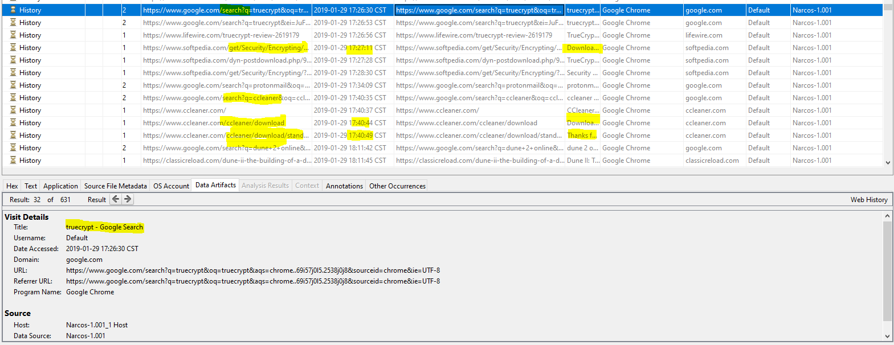
truecrypt y acceso a descarga en Softpedia el 30/01/2019 NZDT.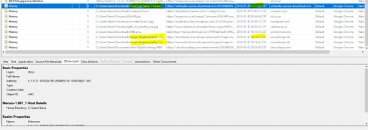
TrueCrypt Setup 7.1a.exe y de Image Steganography 1.5.2 Setup.exe.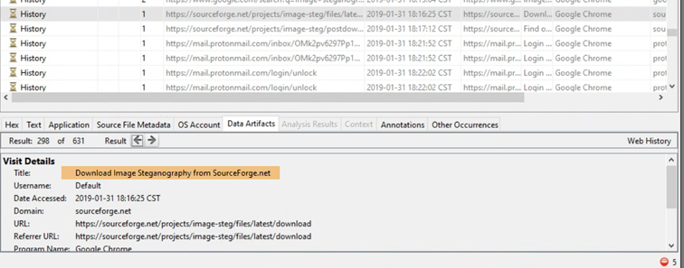
SOFTWARE.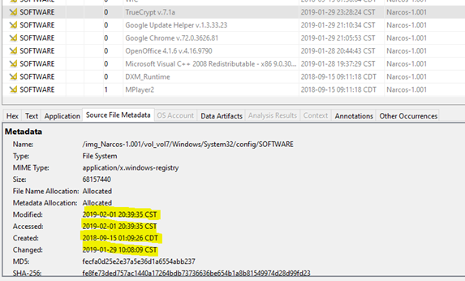
IMAGE STEGANOGRAPHY.EXE-EE29E7F8.pf y trazas de limpieza con CCleaner.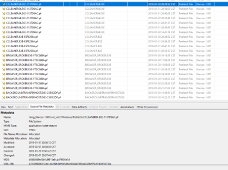
image steganography y descarga desde SourceForge el 01/02/2019 NZDT.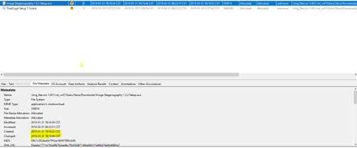
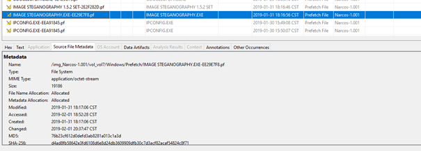
Windows\Prefetch\IMAGE STEGANOGRAPHY.EXE-EE29E7F8.pf confirmando su ejecución el 01/02/2019 NZDT.Pregunta 20. Formula una hipótesis sobre la relación del equipo con los hechos investigados y una explicación alternativa. Sustenta el análisis con cuatro hallazgos y señala dos evidencias adicionales necesarias.
1. Hipótesis principal (vínculo directo con la operación investigada): La computadora de escritorio SK-DESKTOP (Narcos-1), configurada bajo el perfil único local Steve y asegurada en el inmueble de Petone vinculado a Steve Kowhai, operó como estación de coordinación logística, comunicación encubierta y resguardo digital para el ingreso y distribución de metanfetamina procedente de Brisbane, Australia (BNE), hacia Wellington, Petone y Eastbourne (WLG).
2. Sustento probatorio (cuatro hallazgos): Cuatro hallazgos empíricos localizados en Narcos-1 sustentan esta hipótesis:
- Hallazgo 1 — Planeación logística de vuelos y rutas terrestres (
Documents\Miscy Recent Documents): Entre el 31/01/2019 y el 02/02/2019 (NZDT), el usuario fabricó localmente mediante Recorte y anotación (Screen Sketch) los mapasMethod run.jpg(trazando una ruta en el Valle de Hutt con la etiqueta manuscritaHomeen Eastbourne) yairport crystals.jpg(ruta desde Eastbourne hasta el Aeropuerto Internacional de Wellington pasando frente a Petone), y posteriormente guardóBNE.png(Brisbane),dropoff.jpg(ficha de Google Maps de Eastbourne Library, 38 Rimu St) yflightbookings.PNG(cotización para dos viajeros adultos BNE → WLG el 16/02/2019). - Hallazgo 2 — Comunicaciones encubiertas en Discord y ProtonMail: La caché de Discord (
AppData\Roaming\Discord\Cache\data_1) y el historial de Chrome confirman la recepción y descarga el 02/02/2019 a las 15:28:26 NZDT del archivoSteve_K.PNG(renombrado aflightbookings.PNG) desde el canal539550615072800768. Paralelamente, en Web Form Autofill (Web Data) y Web Accounts (Login Data) de Chrome se identificó el aliascrayfish1980y el correocrayfissh1980@protomail.com/crayfish1980@protonmail.comutilizado para acceder al servicio de correo cifrado ProtonMail el 01/02/2019. - Hallazgo 3 — Despliegue de cifrado, esteganografía y limpieza antiforense: El equipo registra la descarga, instalación y ejecución de TrueCrypt 7.1a (30/01/2019) e Image Steganography 1.5.2 (01/02/2019, inmediatamente antes de abrir ProtonMail), combinadas con 11 ejecuciones del limpiador CCleaner (
ccsetup552.exe) entre el 30 de enero y el 1 de febrero para eliminar rastros de actividad y archivos temporales. - Hallazgo 4 — Eliminación de imágenes de metanfetamina y conexión de discos externos USB: En la Papelera de Reciclaje (
$Recycle.Bin) se localizaron tres imágenes previamente guardadas enC:\Users\Steve\Pictures\y eliminadas simultáneamente el 01/02/2019 a las 15:48:41 NZDT (price-meth-bust-4.jpg,620x349.jpgyeight_col_patches_crp.jpg) que muestran bolsas con sustancia cristalina y dinero en efectivo. Apenas 7 minutos antes (15:41:46 NZDT), el registroSYSTEM(USB Device Attached) acredita la conexión del disco duro externo Western Digital Elements Portable (precedido el 31/01/2019 a las 16:04:08 NZDT por un Seagate Backup Plus Slim Portable Drive 1 TB).
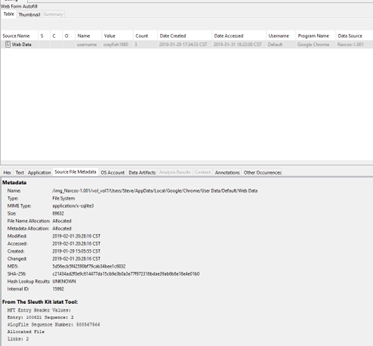
crayfish1980 en la base Web Data de Chrome.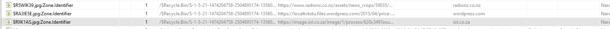
Users\Steve\Pictures.https://mail.protonmail.com/login vinculadas a crayfissh1980@protomail.com.Default de Google Chrome asociado al usuario Steve.
3. Explicación alternativa razonable: Dado que el perfil local Steve carece de verificación biométrica y el inmueble de Petone operaba como punto compartido, un tercero con acceso físico al domicilio pudo haber utilizado la sesión abierta de Windows, creado la cuenta en ProtonMail y gestionado Discord sin intervención directa de Steve Kowhai. De forma complementaria, las tres fotografías de metanfetamina eliminadas en Pictures provienen de portales de noticias (radionz.co.nz, iol.co.za, wordpress.com), lo que aisladamente podría corresponder a consulta de notas periodísticas sobre incautaciones si no existiera su correlación temporal con los mapas de Eastbourne/Petone y la cotización de vuelos desde Brisbane.
4. Dos evidencias adicionales necesarias: Con la imagen de disco Narcos-1 no puede leerse el contenido de los correos cifrados en ProtonMail, los chats históricos de Discord ni el interior de posibles contenedores cifrados. Para cerrar estas brechas se requieren dos evidencias adicionales:
- Evidencia adicional 1 — Análisis forense del volcado de memoria RAM (
Narcos-Mem-1): El examen con Volatility 2.6 de los segmentosNarcos-Mem-1.001a.003incluidos en el conjunto de datos permitiría extraer procesos activos al momento de la intervención, claves maestras de cifrado en memoria (si algún volumen TrueCrypt permanecía montado) y fragmentos en texto claro de Discord o ProtonMail. - Evidencia adicional 2 — Peritaje de los discos duros USB externos y registros de proveedores: Adquisición bit a bit de las unidades externas Seagate Backup Plus Slim 1 TB (serie
MSFT30NA9LP8HF) y Western Digital Elements Portable (serie57584031453734445734D314E) para localizar posibles contenedores.tco archivos respaldados, junto con requerimientos legales de preservación de metadatos e IPs a Discord (canal539550615072800768) y ProtonMail (cuentacrayfish1980).
Línea de tiempo consolidada
La siguiente cronología integra los eventos clave reconstruidos a partir de las distintas fuentes forenses del disco Narcos-1, expresados en tiempo universal coordinado (UTC) y en hora local de Nueva Zelanda (NZDT = UTC+13):
| Fecha / Hora UTC | Fecha / Hora NZDT | Evento reconstruido | Fuente / Artefacto |
|---|---|---|---|
| 28/01/2019 19:15:39 | 29/01/2019 08:15:39 | Instalación de Windows 10 Pro (1809, build 17763) en SK-DESKTOP |
SOFTWARE (InstallDate) |
| 28/01/2019 20:56:33 | 29/01/2019 09:56:33 | Ejecución de DiscordSetup.exe e instalación de Discord v0.0.304 |
UserAssist / SquirrelSetup.log |
| 28/01/2019 21:03:15 | 29/01/2019 10:03:15 | Acceso inicial a bandeja de ProtonMail (crayfish1980) en Microsoft Edge |
WebCacheV01.dat / Timeline |
| 28/01/2019 23:02–23:04 | 29/01/2019 12:02–12:04 | Búsquedas cutting agents for ice y how to launder money |
WebCacheV01.dat (Edge) |
| 29/01/2019 01:01–01:05 | 29/01/2019 14:01–14:05 | Búsquedas drug routes in wellington e international drug routes |
WebCacheV01.dat (Edge) |
| 29/01/2019 23:27:43 | 30/01/2019 12:27:43 | Descarga de TrueCrypt Setup 7.1a.exe desde Softpedia en Chrome |
Chrome History / Downloads |
| 29/01/2019 23:28:24 | 30/01/2019 12:28:24 | Instalación de TrueCrypt 7.1a y ejecución de TrueCrypt Format.exe (12:31:29) |
SOFTWARE / Prefetch |
| 29/01/2019 23:40:51 | 30/01/2019 12:40:51 | Descarga de CCleaner (ccsetup552.exe) y primera ejecución de limpieza |
Chrome / Prefetch |
| 30/01/2019 21:17–21:22 | 31/01/2019 10:17–10:22 | Consulta Google Maps Valle de Hutt y captura de Method run.jpg (Home) |
Chrome / ScreenSketch / MFT |
| 30/01/2019 21:24–21:25 | 31/01/2019 10:24–10:25 | Consulta Google Maps Aeropuerto WLG y captura de airport crystals.jpg |
Chrome / ScreenSketch / MFT |
| 31/01/2019 02:54–02:59 | 31/01/2019 15:54–15:59 | Búsquedas crystal meth y descarga de 3 fotos de incautaciones en Pictures |
Chrome History / Downloads |
| 31/01/2019 03:04:08 | 31/01/2019 16:04:08 | Conexión de disco externo Seagate Backup Plus Slim Portable Drive 1 TB | SYSTEM (USBSTOR) |
| 01/02/2019 00:13:19 | 01/02/2019 13:13:19 | Descarga de BNE.png desde ProtonMail y traslado a Downloads\Misc |
Chrome / MFT |
| 01/02/2019 00:16:32 | 01/02/2019 13:16:32 | Descarga e instalación de Image Steganography 1.5.2 Setup.exe |
Chrome / Prefetch |
| 01/02/2019 00:16:56 | 01/02/2019 13:16:56 | Ejecución de IMAGE STEGANOGRAPHY.EXE seguida de acceso a ProtonMail |
Prefetch / Chrome |
| 01/02/2019 02:41:46 | 01/02/2019 15:41:46 | Conexión de disco externo Western Digital Elements Portable | SYSTEM (USBSTOR) |
| 01/02/2019 02:48:41 | 01/02/2019 15:48:41 | Eliminación simultánea de las 3 imágenes de metanfetamina a Papelera | $Recycle.Bin ($I) |
| 02/02/2019 01:05–01:06 | 02/02/2019 14:05–14:06 | Consulta Google Maps Eastbourne Library y captura de dropoff.jpg |
Chrome / ScreenSketch / MFT |
| 02/02/2019 02:28:26 | 02/02/2019 15:28:26 | Descarga desde Discord de Steve_K.PNG como flightbookings.PNG |
Chrome / Zone.Identifier |
| 17/02/2019 17:34:16 | (Hora adquisición) | Adquisición forense de Narcos-1 con AccessData FTK Imager 4.2.0.13 |
Narcos-1.001.txt |
Limitaciones y consideraciones técnicas
- Normalización de zonas horarias (UTC vs. NZDT vs. CST): NTFS almacena todas las marcas temporales en formato FILETIME (UTC). Durante el examen se observó que FTK Imager 4.3.1.1 presenta los tiempos directamente en UTC, mientras que Autopsy 4.23.1 muestra inicialmente la zona local del equipo examinador (CST, UTC-6) antes de aplicar el perfil
Pacific/Auckland(donde renderizaNZD/+12frente al horario de verano efectivoNZDT/UTC+13). En este reporte se armonizaron todas las marcas temporales a UTC y NZDT (UTC+13) para evitar ambigüedades. - Artefactos del entorno de virtualización y creación del escenario: La imagen
Narcos-1proviene de una máquina virtual VMware (controladora Isilogic, VMware Tools). En los registros de ejecución (Prefetch / UserAssist) figura la herramientaDumpIt.exeejecutada desde una unidad virtual (E:\Project Digital Corpora\Memory Dump Tools), la cual corresponde al procedimiento técnico con el que los creadores del escenario capturaron la memoria RAMNarcos-Mem-1, por lo que se excluye de las acciones atribuidas al sospechoso. - Impacto de herramientas de limpieza antiforense: La ejecución reiterada de CCleaner (
ccsetup552.exe) provocó la eliminación de historial temporal, caché y entradas previas, limitando la recuperación de archivos borrados sin acudir a técnicas avanzadas de carving sobre espacio no asignado. - Alcance de atribución de usuario: Los artefactos examinados acreditan actividad bajo la cuenta local
SteveenSK-DESKTOP, pero el análisis exclusivo del disco no permite establecer de manera fehaciente la identidad física de la persona que operaba el equipo en cada sesión.
Conclusiones
El examen pericial realizado sobre la imagen Narcos-1 confirma su integridad bit a bit respecto a la adquisición original de 2019 y permite reconstruir con precisión la actividad ejecutada en el equipo SK-DESKTOP bajo el perfil único del usuario Steve entre el 29 de enero y el 2 de febrero de 2019 (NZDT). Las 15 preguntas de extracción de la Parte I quedaron documentadas con su valor exacto, ruta interna, procedimiento y respaldo visual comprobable.
Desde el punto de vista investigativo, la correlación entre los mapas recortados localmente (Method run.jpg, airport crystals.jpg y dropoff.jpg), la cotización de vuelos Brisbane–Wellington para dos pasajeros recibida a través de Discord (flightbookings.PNG), las búsquedas sobre metanfetamina y rutas de distribución, el uso de correo cifrado ProtonMail (crayfish1980), la instalación y ejecución de TrueCrypt 7.1a e Image Steganography 1.5.2, y el borrado de fotografías de sustancias ilícitas tras conectar unidades externas USB conforma un cuadro indiciario sólido y coherente con la logística de introducción y entrega investigada. No obstante, conforme al principio de objetividad pericial, la confirmación del contenido de las comunicaciones cifradas, de los volúmenes protegidos y de la identidad física de los interlocutores requiere el análisis del volcado de memoria RAM (Narcos-Mem-1), el peritaje de los discos externos detectados y los requerimientos legales ante Discord y ProtonMail.
Bibliografía
- [Referencia académica obligatoria] Garfinkel, S., Farrell, P., Roussev, V., & Dinolt, G. (2009). Bringing Science to Digital Forensics with Standardized Forensic Corpora. Digital Investigation, 6, S2–S11. Digital Forensic Research Workshop (DFRWS), Montreal, Canadá. https://doi.org/10.1016/j.diin.2009.06.016 | https://simson.net/clips/academic/2009.DFRWS.Corpora.pdf
- [Escenario de práctica obligatorio] Digital Corpora. (2019). 2019 Narcos Scenario (Narcos-1 disk image and memory dump dataset) [Conjunto de datos estandarizado de práctica forense]. https://digitalcorpora.org/corpora/scenarios/2019-narcos/
- [Referencia técnica NTFS] Carrier, B. (2005). File System Forensic Analysis. Addison-Wesley Professional. (Documentación técnica de estructuras NTFS, MFT, atributos
$STANDARD_INFORMATION,$FILE_NAMEy flujos alternos de datos). - [Documentación de herramienta] Basis Technology / The Sleuth Kit. (2025). Autopsy User Documentation (v4.23.1). https://sleuthkit.org/autopsy/docs/user-docs/4.23.1/
- [Documentación de herramienta] Exterro / AccessData. (2024). FTK Imager User Guide (v4.3.1). https://www.exterro.com/ftk-imager
Documentación del proyecto final (PDF)
Puedes consultar el expediente técnico completo del proyecto directamente a continuación o descargarlo en tu dispositivo: